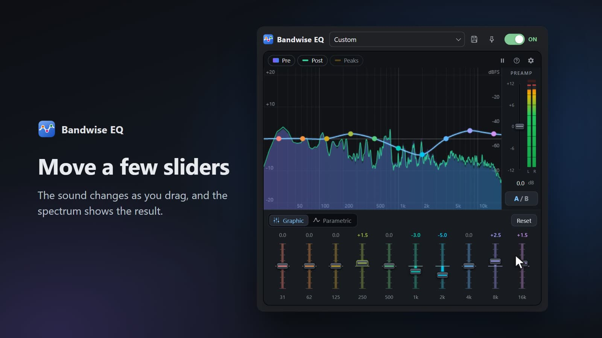
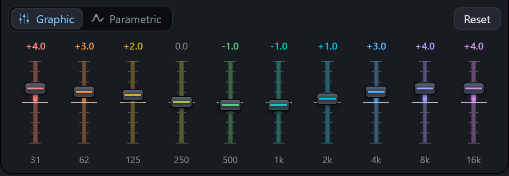
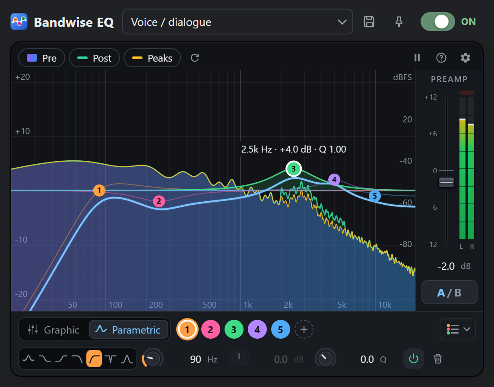
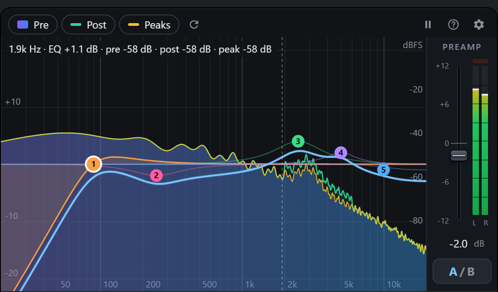
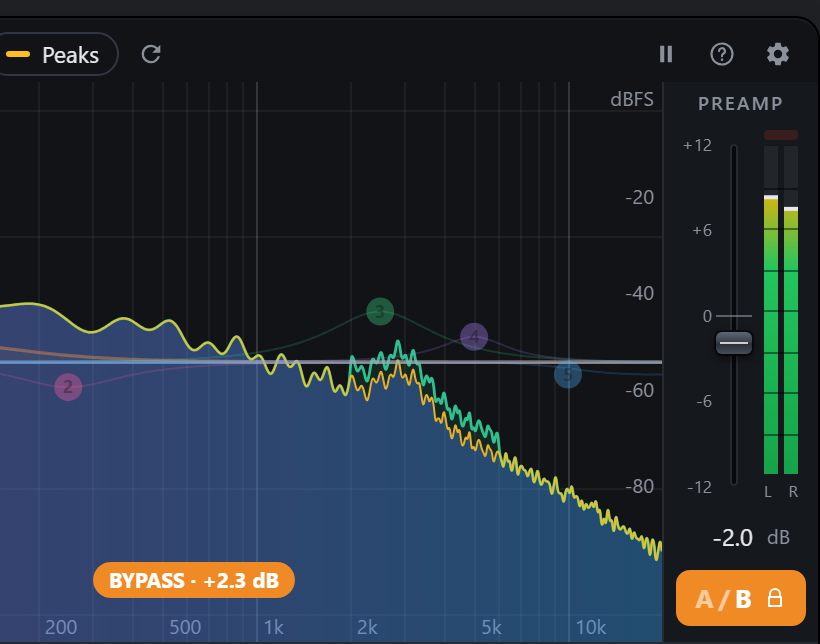
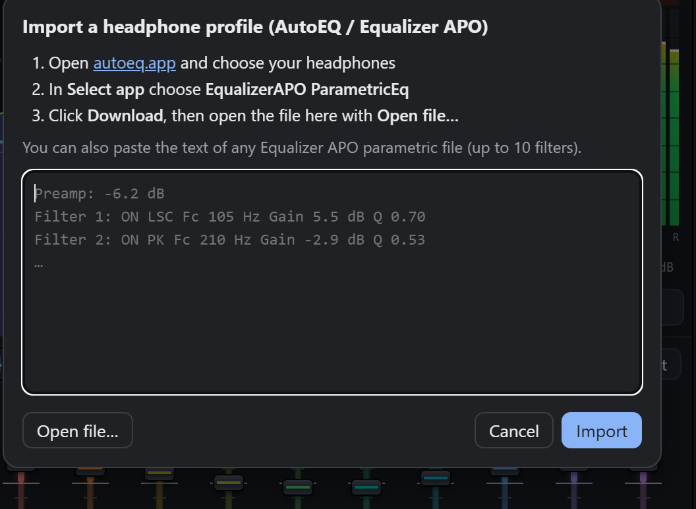

An equalizer for your browser tabs.
Fix the sound of a video, a podcast or a song playing in Chrome or Edge. Move a few sliders if that's all you need, or go into detail with a parametric EQ and a spectrum analyzer.
A free, open source extension for Chrome and Edge. No account, no tracking, nothing leaves your computer.
See it in action

Play the demo video (56 seconds)I used to rely on another equalizer extension, mostly for YouTube. It did the job, but it forgot my settings every time I opened it, and I had to keep a separate window open to make it work.
So I wrote my own. Bandwise EQ remembers what you set, for each tab and, if you want, for each site. You open it, adjust, close it, and it keeps working in the background. Along the way it grew a proper spectrum analyzer, because a frequency is much easier to fix when you can see it.
A quick tour
Everything happens in one small window. Here is what each part does, with a few things worth trying.
Start with the sliders
Ten sliders, from deep bass at 31 Hz up to 16 kHz. Drag them, or drag the dots on the graph. The curve passes exactly through the values you set, with no bumps in between.
Try this: if voices sound muffled, lower 250 Hz a little and raise 2k. If a video booms, pull 62 Hz down.


Go parametric for precise work
Up to ten bands, each with its own frequency, gain and width (Q), and seven filter types: bell, shelves, high-pass, low-pass, notch and band-pass. Both modes edit the same EQ, so your curve comes with you when you switch. Go from parametric to the sliders and back without moving any, and your original bands are still there.
Try this: type 2.5k in a frequency field, drag a knob up or down, and hold Shift for fine steps.


Look before you turn a knob
The analyzer shows the sound before the EQ and after it, with an optional peak hold. Hover over the graph and it tells you the frequency, how much the EQ changes it, and the level of the sound at that point.
Try this: a hum on a recording shows up as a narrow spike, often at 50 or 60 Hz. Put a notch filter right on it.


Compare at the same volume
Hold the A/B button to hear the original sound. Louder almost always seems better, which makes comparisons misleading, so Bandwise plays the original at the same loudness as your EQ. The orange label tells you how much it compensated. Shift+click keeps the bypass on.


Bring your headphone profile
AutoEQ publishes correction curves for thousands of headphones. Pick yours on autoeq.app, choose EqualizerAPO ParametricEq as the app, download the file, and open it from the preset menu under Import headphone profile. Save it as a preset and it's there whenever you need it.


Getting started
- Install Bandwise EQ from the Chrome Web Store or Microsoft Edge Add-ons.
- Play something in a tab: a video, a song, a podcast.
- Click the Bandwise EQ icon in the toolbar and turn it on.
- Adjust the sound. You can close the popup whenever you like; the EQ keeps working until you turn it off or close the tab.
Questions
Why does the browser say the tab is being captured?
That's how the browser lets an extension work with the sound of a tab: it hands the audio over and shows an indicator so you know. Bandwise processes the audio on your computer and plays it back straight away. Nothing is recorded or sent anywhere.
Does it work on every site?
It works on any normal web page that plays sound. The browser's own pages (like settings or the extension store) can't be processed, and some streaming services that use DRM protection may not allow it.
Can I use different settings on different tabs?
Yes. Each tab keeps its own settings until you close it. If you want a site to always sound a certain way, open the popup on that site and click the pin next to the preset menu.
Which option should I pick on autoeq.app?
EqualizerAPO ParametricEq. It produces ten filters, which is exactly what Bandwise supports, in a format it reads directly.
Why ten bands at most?
Ten bands are enough for almost any correction, they fit comfortably in a small popup, and they match the ten filters AutoEQ uses for headphone profiles.
Is it really free? What about my data?
It's free and open source under the GPL-3.0. It has no network access, collects nothing, shows no ads and doesn't read the pages you visit. The privacy policy has the details, and the code is on GitHub if you'd like to check.
I found a bug or have an idea
Please open an issue on GitHub. Bug reports with the site where it happened are especially helpful.